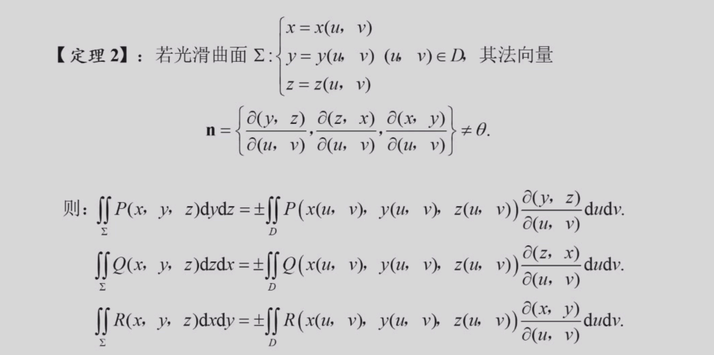

数学分析Ⅱ¶
约 3073 个字 预计阅读时间 9 分钟
任课教师：阮火军
成绩组成
- 作业+点名 20%
- 小测 20%
- 期末 60%
级数¶
重要级数¶
级数性质¶
线性性：\(\sum_{n=1}^{\infty} (\alpha x_n + \beta y_n) = \alpha \sum_{n=1}^{\infty} x_n + \beta \sum_{n=1}^{\infty} y_n\)
其中级数均收敛，\(\alpha,\beta\)为常数
结合性：收敛级数和中任意添加括号，其和不变
这是因为新级数的部分和数列是原级数的部分和数列的子列
一些充分/必要条件：
判别级数敛散的方法¶
- 定义法，判断\({S_n}\)是否收敛
- 利用必要条件先判断\({x_n}\)是否收敛于0
- 柯西收敛准则
- 收敛+发散=发散，收敛+收敛=收敛
正项级数专属：¶
由于\(S_n\)单调递增，所以\(\sum_{n=1}^{\infty} x_n\)收敛的充要条件是\(\{S_n\}\)有上界
-
比较判别法（\(A\)为正数）：
- 若\(\forall n \ge 1, 0 \le x_n \le Ay_n\)，且\(\sum_{n=1}^{\infty} y_n\)收敛，则\(\sum_{n=1}^{\infty} x_n\)收敛
- 大的收敛，小的也收敛
- 若\(\forall n \ge 1, 0 \le x_n \le Ay_n\)，且\(\sum_{n=1}^{\infty} x_n\)发散，则\(\sum_{n=1}^{\infty} y_n\)发散
- 小的发散，大的也发散
- 由于修改级数的有限项后级数敛散性不变，因此上述条件可以只对从某个\(N_0\)后开始的项成立，即\(\forall n \ge 1\)可以变为\(\exists N_0 \ge 0, \forall n \ge N_0\)
-
比较判别法的极限形式：
- 若\(\lim_{n \to \infty} \frac{x_n}{y_n} = l (0 \le l \le +\infty)\)，则
- 若\(0 < l < +\infty\)，则\(\sum_{n=1}^{\infty} x_n\)与\(\sum_{n=1}^{\infty} y_n\)同敛散
- 若\(l=0\)，则\(x_n\)趋于0的速度更快，充分大项后\(x_n\)更小，则\(\sum_{n=1}^{\infty} y_n\)收敛\(\Rightarrow \sum_{n=1}^{\infty} x_n\)收敛
- 若\(l=+\infty\)，则\(x_n\)趋于0的速度更慢，充分大项后\(x_n\)更大，则\(\sum_{n=1}^{\infty} y_n\)发散\(\Rightarrow \sum_{n=1}^{\infty} x_n\)发散
- 若\(\lim_{n \to \infty} \frac{x_n}{y_n} = l (0 \le l \le +\infty)\)，则
例
- 判断\(\sum_{n=1}^{\infty} 2^n \sin \frac{\pi}{3^n}\)的敛散性:
与收敛级数\(\pi(\frac{2}{3})^n\)比较
\(\frac{2^n \sin \frac{\pi}{3^n}}{\pi(\frac{2}{3})^n} = \frac{\sin \frac{\pi}{3^n}}{\frac{\pi}{3^n}} \rightarrow 1 (n \rightarrow \infty)\)
因此\(\sum_{n=1}^{\infty} 2^n \sin \frac{\pi}{3^n}\)收敛 - 判断\(\sum {(\sqrt[n]{a} - 1)} (a > 1)\)的敛散性：
对\(a^x\)泰勒展开：\(a^x = 1 + x\ln a + o(x)\)
因此\(\sqrt[n]{a} - 1 = \frac{\ln a}{n}+o(\frac{1}{n})\)
因此\(\frac{\sqrt[n]{a} - 1}{n} \rightarrow \ln a (n \rightarrow \infty)\)，而\(\sum \frac{1}{n}\)发散，因此\(\sum {(\sqrt[n]{a} - 1)}\)发散 - 变式：判断\(\sum_{n=1}^{\infty} (a^\frac{1}{n}+a^{-\frac{1}{n}}-2)\)的敛散性：
分别泰勒展开到二阶：
\(a^\frac{1}{n} = 1 + \frac{\ln a}{n} - \frac{\ln^2 a}{2n^2} + o(\frac{1}{n^2})\)
\(a^{-\frac{1}{n}} = 1 - \frac{\ln a}{n} - \frac{\ln^2 a}{2n^2} + o(\frac{1}{n^2})\)
因此\(\frac{a^\frac{1}{n}+a^{-\frac{1}{n}}-2}{\frac{\ln^2 a}{n^2}} \rightarrow 1 (n \rightarrow \infty)\)，因此\(\sum_{n=1}^{\infty} (a^\frac{1}{n}+a^{-\frac{1}{n}}-2)\)收敛
由比较判别法，可以得到下面两种判别法：
-
根式判别法：
- 若\(\lim_{n \to \infty} \sqrt[n]{x_n} = q\)，则
- 若\(q<1\)，\(\sum_{n=1}^{\infty} x_n\)收敛
- 若\(q>1\)，\(\sum_{n=1}^{\infty} x_n\)发散
- 此时\(\lim_{n \to \infty} \sqrt[n]{x_n}>1\)，有无穷多项\(x_n\)都大于1
- 因此\(x_n\)不趋于0，级数发散。
- 若\(q=1\)，无法判断
- 若\(\lim_{n \to \infty} \sqrt[n]{x_n} = q\)，则
-
比值判别法：
- 若\(\lim_{n \to \infty} \frac{x_{n+1}}{x_n} = q\)，则
- 若\(q<1\)，\(\sum_{n=1}^{\infty} x_n\)收敛
- 若\(q>1\)，\(\sum_{n=1}^{\infty} x_n\)发散
- 若\(q=1\)，无法判断
- 若\(\lim_{n \to \infty} \frac{x_{n+1}}{x_n} = q\)，则
3和4实际上是同一个意思，考虑到\(\lim_{n \to \infty} \frac{x_{n+1}}{x_n} = \lim_{n \to \infty} {\sqrt[n]{x_n}}\)，所以两者是等价的
例
- 判断\(\sum_{n=1}^{\infty} n^{2}e^{-n}\)的敛散性：
\(\sqrt[n]{n^{2}e^{-n}} = \sqrt[n]{n^{2}}\sqrt[n]{e^{-n}} = e^{-1}n^{\frac{2}{n}} \rightarrow e^{-1} < 1 (n \rightarrow \infty)\)，因此\(\sum_{n=1}^{\infty} n^{2}e^{-n}\)收敛 - 判断\(\sum_{n=1}^{\infty} \frac{n^n}{3^{n}n!}\)的敛散性：
\(\frac{x_{n+1}}{x_n} = \frac{(n+1)^{n+1}3^{n}n!}{3^{n+1}(n+1)!n^{n}} = \frac{(n+1)^{n}}{3n} \rightarrow \frac{1}{3} < 1 (n \rightarrow \infty)\)，因此\(\sum_{n=1}^{\infty} \frac{n^n}{3^{n}n!}\)收敛 - 由于3和4本质一样，注意就题目选择更简单的方法
- 积分判别法：
- 若\(f(x)\)在\([1,+\infty)\)上连续，且\(f(x) \ge 0\)，\(f(x)\)单调递减，则\(\sum_{n=1}^{\infty} f(n)\)与\(\int_{1}^{\infty} f(x)dx\)同敛散
交错级数¶
定义：级数\(\sum_{n=1}^{\infty} (-1)^{n+1}u_n\)称为交错级数,其中\(u_n \ge 0\)
- 交错级数的\(Leibniz\)判别法：
- 若\(\{u_n\}\)单调递减，且\(\lim_{n \to \infty} u_n = 0\)，则\(\sum_{n=1}^{\infty} (-1)^{n+1}u_n\)收敛
例
- 下述四个级数均收敛，证明略
- \(\sum_{n=1}^{\infty} \frac{(-1)^{n+1}}{n^p}(p>0)\)
- \(\sum_{n=2}^{\infty} \frac{(-1)^{n}}{(\ln n)^q}(q>0)\)
- \(\sum_{n=2}^{\infty} \frac{(-1)^{n}\ln n}{n}\)
- \(\sum_{n=1}^{\infty} \frac{(-1)^{n+1}n^2}{n^3+1}\)
绝对收敛与条件收敛¶
定义：若\(\sum_{n=1}^{\infty} |x_n|\)收敛，则\(\sum_{n=1}^{\infty} x_n\)收敛，称后者绝对收敛（超级收敛！）。
由\(\sum_{k=n+1}^{n+p} x_k \le ||x_{n+1}|+\dots +|x_{n+p}|| \le \epsilon\)既得。
若\(\sum_{n=1}^{\infty} x_n\)收敛，而\(\sum_{n=1}^{\infty} |x_n|\)发散，则称前者条件收敛。
例
- 判断\(\sum_{n=1}^{\infty} \frac{x^{n}}{n^p}\)的敛散性：
- 利用条件/绝对收敛，令\(u_n = abs(\frac{x^{n}}{n^p}) = \frac{|x|^n}{n^p}\)
- 利用根式判别法，\(\sqrt[n]{u_n} = \frac{|x|}{n^{\frac{p}{n}}} \rightarrow |x| (n \rightarrow \infty)\)
- 因此，当\(|x|<1\)时，\(\sum_{n=1}^{\infty} \frac{x^{n}}{n^p}\)绝对收敛
- 当\(|x|>1\)时，\(\frac{x^n}{n^p}\rightarrow \infty\),\(\sum_{n=1}^{\infty} \frac{x^{n}}{n^p}\)发散
- \(x = 1\)时，原级数为p级数，当\(p>1\)时绝对收敛，当\(p \le 1\)时发散
- \(x = -1\)时，原级数为交错级数\(\sum_{n=1}^{\infty} \frac{(-1)^{n}}{n^p}\)
- \(p>1\)时，级数的绝对值收敛，级数本身由\(Liebniz\)判别法收敛，因此绝对收敛。
- \(0< p \le 1\)时，级数的绝对值发散，级数本身由\(Liebniz\)判别法发散，因此条件收敛。
- \(p \le 0\)时，\(\frac{(-1)^n}{n^p}\)不趋向于0，级数发散
有用的引论¶
\(Abel变换\):对于数列\(a_n\),\(b_n\)，记\(A_n,B_n\)分别为其前n项和，
则\(\sum_{k=1}^{n} a_k b_k = A_n B_n + \sum_{k=1}^{n-1} B_k(a_{k}-a_{k+1})\)
\(Abel引理\):记\(B^{\ast}=\max \{|B_k|,1 \le k \le n\}, a^{\ast} = \max \{|a_k|,1 \le k \le n\}\)
上个段落变换后的式子
\(\le |a_1-a_2||B_1|+|a_2-a_3||B_2|+\dots+|a_{n-1}-a_n||B_{n-1}|+|a_n||B_n|\)
\(\le (|a_1-a_2|+|a_2-a_3|+\dots+|a_{n-1}-a_n|+|a_n|)B^{\ast}\)
当\(a_n\)单调时，\(a_1 - a_2\),\(a_2 - a_3\),\(\dots\),\(a_{n-1} - a_n\)同号。
因此先取绝对值在求和等于先求和再取绝对值。
因此上式 \(= (|a_1 - a_n|+|a_n|)B^{\ast} \le 3a^{\ast}B^{\ast}\)
得到引理: 若(1)\(a_n\)单调，(2)\(B_n\)为\(b_n\)前n项和
记\(B^{\ast}=\max \{|B_k|,1 \le k \le n\}, a^* = \max \{|a_k|,1 \le k \le n\}\)，则\(\sum_{k=1}^{n} a_k b_k \le 3a^{\ast}B^{\ast}\)
- 由引论可推出下述定理：
- Dirichlet判别法：若\(\{a_n\}\)单调趋于0，\(\sum b_n\)有界（\(b_n\)的部分和数列有界），则\(\sum_{n=1}^{\infty} a_n b_n\)收敛
- Abel判别法：若\(\{a_n\}\)单调有界，\(\sum b_n\)收敛，则\(\sum_{n=1}^{\infty} a_n b_n\)收敛
例
- 若\(a_n\)单调递减且趋向于0，求证\(\forall x \in [0,2\pi]\)，\(\sum_{n=1}^{\infty} a_n \sin nx\)收敛
- 由\(Dirichlet\)判别法，只需证明\(\sum \sin nx\)有界
- (trick-积化和差)对形如\(\sin kx\)的数列求和，乘上一个\(2\sin \frac{x}{2}\)，得到\(2\sin \frac{x}{2} \sin kx = \cos(k-\frac{1}{2})x-\cos(k+\frac{1}{2})x\)
- 因此,\(2\sin \frac{x}{2} \sum \sin kx = \sum (\cos (k-\frac{1}{2})x-\cos (k+\frac{1}{2})x) = \cos \frac{x}{2}- \cos (n+\frac{1}{2} )x\)
- 因此\(\forall n \ge 1, |2 \sin \frac{x}{2}\sum \sin kx| = |\cos \frac{x}{2}- \cos (n+\frac{1}{2} )x| \le 2\)
- 因此\(|\sum \sin kx| \le \frac{1}{|\sin \frac{x}{2}|}(有界)\)
- 由Dirichlet判别法，\(\sum_{n=1}^{\infty} a_n \sin nx\)收敛
- 若\(\sum b_n\)收敛，则下述级数都收敛：
- \(\sum \frac{b_n}{n^p}\)
- \(\sum \frac{b_n}{\sqrt{n+1}}\)
- \(\sum b_n (1+\frac{1}{n})^n\)
绝对收敛与条件收敛的性质¶
若\(\sum_{n=1}^{\infty} x_n\)绝对收敛，则\(\sum_{n=1}^{\infty} x_n^{+}\)与\(\sum_{n=1}^{\infty} x_n^{-}\)均绝对收敛。
若\(\sum_{n=1}^{\infty} x_n\)条件收敛，则\(\sum_{n=1}^{\infty} x_n^{+}\)与\(\sum_{n=1}^{\infty} x_n^{-}\)均发散。
级数的重排¶
定义：设\(\varphi\)是\(N^{\ast}\)上的双射，称级数\(\sum_{n=1}^{\infty} x_{\varphi(n)}\)是级数\(\sum_{n=1}^{\infty} x_n\)的重排。
亦即对级数进行加法交换律。
定理：若\(\sum_{n=1}^{\infty} x_n\)绝对收敛，则\(\sum_{n=1}^{\infty} x_{\varphi(n)}\)也绝对收敛，且其和与原级数相同。
\(Riemann定理\):若\(\sum_{n=1}^{\infty} x_n\)条件收敛，则一定存在某个重排\(\sum_{n=1}^{\infty} x_{\varphi(n)}\)，使得其和为任意给定的实数。
级数的乘积¶
- \(Cauchy\)乘积：\(\sum_{n=1}^{\infty} a_n \sum_{n=1}^{\infty} b_n = \sum_{n=1}^{\infty} (a_1 b_n + a_2 b_{n-1} + \dots + a_n b_1)\) (排成矩阵后的第n条对角线上的元素和)
- 正方形乘积：\(\sum_{n=1}^{\infty} a_n \sum_{n=1}^{\infty} b_n = \sum_{n=1}^{\infty} (a_1 b_n + a_2 b_n + \dots + a_n b_n +a_n b_{n-1} + \dots + a_n b_1)\)(排成矩阵后的第n列到第n行组成的直角上的元素和)
Cauchy定理¶
设\(\sum a_n\)与\(\sum b_n\)绝对收敛于A,B，
则对于由所有乘积\(a_i b_j\)任意排序再求和得到的级数也绝对收敛，
且其和等于AB。
函数列与函数项级数¶
定义：\(f_1,f_2,\dots,f_n,\dots\)是定义在\(E\)上的函数，
则\(\{f_n\}\)为\(E\)上的一个函数列。
\(\forall x \in E\)，若\(\{f_n(x)\}\)收敛于\(f(x)\)，则称\(\{f_n\}\)收敛于\(f\)，记为\(f_n \rightarrow f\)
若\(x_0 \in E\)，所有\(\{f_n(x_0)\}\)都收敛于\(f(x_0)\)，则称\(\{f_n\}\)在\(x_0\)处收敛于\(f(x_0)\)，记为\(f_n \rightarrow f(x_0)\)
点集\(\{x \in E \mid \{f_n(x)\} 收敛\}\)称为\(\{f_n\}\)的收敛域
点态收敛：\(\forall x \in D, \forall \epsilon > 0, \exists N(\epsilon ,x) > 0, 当n>N(\epsilon ,x)时，有|f_n(x)-f(x)|<\epsilon\)
一致收敛：\(\forall \epsilon > 0, \exists N(\epsilon) > 0(与x无关), 当n>N(\epsilon)时，有|f_n(x)-f(x)|<\epsilon\)，记为\(f_n \rightrightarrows f\)
不一致收敛：\(\exists \epsilon_0 > 0, \forall N > 0, \exists n>N, 使得|f_n(x)-f(x)| \ge \epsilon_0\)
一致收敛必定点态收敛。
例
- 证明\(f_n(x) = x^n 在[0,1]\)不一致收敛
- \(f(x) = \lim_{n \to \infty} x^n = \begin{cases} 0 & x \in [0,1) \\ 1 & x = 1 \end{cases}\)
- 取\(\epsilon_0 = \frac{1}{2}\)，则\(\forall N > 0\), 令\(n = N+1\), 令\(x = \sqrt[n](\frac{1}{2})\)
- 则\(|f_n(x)-f(x)| = \frac{1}{2} \ge \epsilon_0\)
- 而这个函数在\([0,1-\delta],\forall \delta \in (0,1)\)上一致收敛
- \(\forall x \in [0,1-\delta], |f_n(x)-f(x)| = x^n \le (1-\delta)^n \le (1-\delta)^N = \epsilon (取N=\frac{\ln \epsilon}{\ln (1-\delta)})\)
柯西收敛准则（典中典）¶
定义：\(\{f_n\}\)在\(E\)上一致收敛的充要条件是\(\forall \epsilon > 0, \exists N(\epsilon) > 0, 当m,n>N(\epsilon)时，有|f_n(x)-f_m(x)|<\epsilon\)
由此可推出另一充要条件：记\(\sup_{x \in E} |f_n(x)-f(x)| = M_{n}\)，则\(\{f_n\}\)在\(E\)上一致收敛的充要条件是\(\lim_{n \to \infty} M_{n} = 0\)
例
- 判断\(f_n(x) = nxe^{-nx^2}\)在\(R\)上的一致收敛性
- （配凑\(nx^2\)）\(\lim_{n \to \infty} nxe^{-nx^2} = \frac{1}{x} \lim_{n \to \infty} \frac{nx^2}{e^{nx^2}} = \frac{1}{x} 0 = 0\)
- 因此极限函数\(f(x) = 0\),\(f_n(x)-f(x) = f_n(x)\)
- 求导得\(f_n'(x) = ne^{-nx^2}(1-2nx^2)\)，令\(f_n'(x) = 0\)得\(x = \frac{1}{\sqrt{2n}}\)，此为最大值点
- 则\(M_n = f_n(\frac{1}{\sqrt{2n}})\)，不趋于0.
D-A判别法¶
函数项级数\(\sum_{n=1}^{\infty} a_n b_n\)满足以下两个条件之一时，其在\(E\)上一致收敛：
- \(\{a_n(x)\}\)对每一固定的\(x \in E\)关于\(n\)单调，且在\(E\)上一致有界，\(\sum_{n=1}^{\infty}b_n(x)\)在\(E\)上一致收敛。（Abel判别法）
- \(\{a_n(x)\}\)对每一固定的\(x \in E\)关于\(n\)单调，且在\(E\)上一致收敛于0，\(\sum_{n=1}^{\infty}b_n(x)\)的部分和数列\(\sum_{k=1}^{n}b_k(x)\)在\(E\)上一致有界。（Dirichlet判别法）
幂级数¶
定义：形如\(\sum_{n=0}^{\infty} a_n(x-x_0)^n = a_0 + a_1(x-x_0)+ \cdots\)的函数项级数称为幂级数
只需研究\(\sum a_n x\)的性质。
- Abel第一定理：
- 若上述幂级数在点\(x=\xi\)处收敛，则对于任意\(|x|<|\xi|\)，幂级数在点\(x\)处绝对收敛
由此得到收敛半径的定义：
- 令\(R = \sup \{ |x| \mid \sum_{n=0}^{\infty} a_n x^n 收敛 \}\)，称\(R\)为幂级数的收敛半径
- \((-R,R)\)称为幂级数的收敛区间
- 定理：若\(\lim_{n \to \infty} \sqrt[n]{|a_n|} = A\)，则\(R = \frac{1}{A} = \begin{cases} 0 & A = +\infty \\ +\infty & A = 0 \\ \frac{1}{A} & 0 < A < +\infty \end{cases}\)
- 推论：若\(\lim_{n \to \infty} \frac{|a_{n+1}|}{|a_n|} = A\)，则\(R = \frac{1}{A}\)
-
收敛域：单独探讨\(x=R\)与\(x=-R\)的收敛性后加到收敛区间内
-
Abel第二定理：
- 若幂级数\(\sum_{n=0}^{\infty} a_n x^n\)的收敛半径为\(R>0\)，则其在\((-R,R)\)中内闭一致收敛
- 若其在\(x=R\)处收敛，则其在\([0,R]\)上一致收敛；若其在\(x=-R\)处收敛，则其在\([-R,0]\)上一致收敛
性质：
- 连续性：幂级数在其收敛区间内连续
- 可积性：\(\forall [a,b] \subset (-R,R)\)，幂级数的和函数在\([a,b]\)上可积，且\(\int_{a}^{b} \sum_{n=0}^{\infty} a_n x^n dx = \sum_{n=0}^{\infty} a_n \int_{a}^{b} x^n dx\)
- 推论：取\(a=0\), \(b=x\)，得\(\int_{0}^{x} \sum_{n=0}^{\infty} a_n t^n dt = \sum_{n=0}^{\infty} \frac{a_n}{n+1} x^{n+1}\)
- 上面这个级数的收敛半径\(\ge\)原级数的收敛半径
- 推论：取\(a=0\), \(b=x\)，得\(\int_{0}^{x} \sum_{n=0}^{\infty} a_n t^n dt = \sum_{n=0}^{\infty} \frac{a_n}{n+1} x^{n+1}\)
例
\(\sum_{n=0}^{\infty} x^n\)的收敛域为\((-1,1)\)
逐项积分得\(\sum_{n=0}^{\infty} \frac{1}{n+1} x^{n+1}\)的收敛域为\([-1,1)\)
- 可微性：幂级数的和函数在其收敛区间内可导，且导函数为逐项求导，求导后收敛半径不变
- 推论：取\(a=0\), \(b=x\)，得\(\sum_{n=0}^{\infty} a_n x^n\)的和函数的导函数为\(\sum_{n=0}^{\infty} a_n n x^{n-1}\)
幂级数展开¶
设\(f\)是\(\sum a_n (x-x_0)^n\)在(x_0 - r,x_0 + r)上的和函数，则\(f\)在该区间任意阶可导，且\(f^{(k)}(x) = n(n-1) \cdots (n-k+1)a_n(x-x_0)^{n-k}\)
代入\(x = x_0\), 得到\(f^{(k)}(x_0) = k!a_k\)，因此\(a_k = \frac{f^{(k)}(x_0)}{k!}\)，这说明幂级数各项的系数由和函数在\(x_0\)的各阶导数决定
得泰勒级数：\(f(x) = \sum_{n=0}^{\infty} \frac{f^{(n)}(x_0)}{n!}(x-x_0)^n\)，\(x_0 = 0\)时称为麦克劳林级数
- 此时有Lagrange余项：\(R_n(x) = \frac{f^{(n+1)}(\xi)}{(n+1)!}x^{n+1}\)，\(\xi \in (0,x)\),
- 积分型余项：\(R_n(x) = \int_{0}^{x} \frac{(x-t)^n}{n!}f^{(n+1)}(t)dt\)
- Cauchy余项：\(R_n(x) = \frac{1}{n!} f^{(n+1)}(\theta x)(1-\theta)^n x^{n+1}\)，\(\theta \in (0,1)\)
定理（判断和函数的存在性）：
- 若\(\exists M > 0, \forall x \in (x_0 - r,x_0 + r)\), 当\(n\)充分大时有\(|f^{(n)}(x)| \le M\)，则\(\forall x \in (x_0 - r,x_0 + r)\), \(f(x) = \sum_{n=0}^{\infty} \frac{f^{(n)}(x_0)}{n!}(x-x_0)^n\)
常见幂级数展开
- \((1+x)^{\alpha} = 1 + \sum \frac{\alpha(\alpha-1)\cdots(\alpha-n+1)}{n!}x^n\)，\(|x|<1\)
- 令\(\alpha = -1\)，得\(\frac{1}{1+x} = \sum (-1)^n x^n\)，\(|x|<1\)
- 对上式逐项求积分，得\(\ln(1+x) = \sum \frac{(-1)^{n}}{n+1}x^{n+1}\)，\(x \in (-1,1]\)
- 用\(x^2\)替换\(x\)，得\(\frac{1}{1+x^2} = \sum (-1)^n x^{2n}\)，\(|x|<1\)
- 逐项积分得到\(\arctan x = \sum \frac{(-1)^n}{2n+1}x^{2n+1}\)，\(|x| \le 1\)
- 令\(\alpha = -\frac{1}{2}\)，得\(\frac{1}{\sqrt{1+x}} = 1+ \sum \frac{(-1)^n(2n-1)!!}{(2n)!!}x^n\)，\(|x|<1\)
- 用\(-x^2\)代替\(x\)，得\(\frac{1}{\sqrt{1-x^2}} = 1+ \sum \frac{(2n-1)!!}{(2n)!!}x^{2n}\)，\(|x|<1\)
- 逐项积分得到\(\arcsin x = \sum \frac{(2n-1)!!}{(2n)!!} \frac{x^{2n+1}}{2n+1}\)，\(|x| \le 1\)
例
- 求\(f(x) = \frac{1}{x^2}\)在\(x = 1\)处展开
- 注意到与\(\frac{1}{x}\)的关系
- \(\frac{1}{x} = \frac{1}{1+(x-1)} = \sum (-1)^n (x-1)^n\)，\(|x-1|<1\)
- 求导，\(\frac{1}{x^2} = \sum_{n=1}^{\infty} (-1)^{n-1} n(x-1)^{n-1}\)，\(|x-1|<1\)
Fourier级数¶
三角级数¶
定义：形如\(\frac{a_0}{2} + \sum_{n=1}^{\infty} (a_n \cos nx + b_n \sin nx)\)的级数称为三角级数
性质：(1)周期性：\(T = \frac{2\pi}{n}\)
(2) 正交性：\(\int_{-\pi}^{\pi} \cos nx \cos mx dx = \int_{-\pi}^{\pi} \sin nx \sin mx dx = \pi \delta_{nm} (\delta_{nm}=1,n=m;=0,n \ne m)\)
Fourier¶
若\(f\)以\(2\pi\)为周期，傅里叶系数\(a_n = \frac{1}{\pi} \int_{-\pi}^{\pi} f(x) \cos nx dx\)，\(b_n = \frac{1}{\pi} \int_{-\pi}^{\pi} f(x) \sin nx dx\)
以\(a_n,b_n\)为系数的三角级数称为\(f\)的Fourier级数
奇函数的\(a_n = 0\)，偶函数的\(b_n = 0\)
Bessel不等式：\(\frac{a_0^2}{2} + \sum_{n=1}^{\infty} (a_n^2 + b_n^2) \le \frac{1}{\pi} \int_{-\pi}^{\pi} f^2(x) dx\)
一些推论：
- \(f\)在\([-\pi,\pi]\)上可积, 则\(\lim_{n \to \infty} a_n = \lim_{n \to \infty} b_n = 0\)
- \(f\)在\([0,\pi]\)上可积，则\(\lim_{n \to \infty} \int_{0}^{\pi} f(x) \sin (n+\frac{1}{2}) x dx = 0\)
Fourier级数的收敛性¶
（最看不懂的一集） 若\(f\)在\([-\pi, \pi]\)按段光滑（有连续导数），则\(\forall x \in [-\pi, \pi]\)，Fourier级数收敛于\(\frac{f(x+0)+f(x-0)}{2}\)
例
- 求\(f(x) = \begin{cases} 1 & -\pi \le x < 0 \\ 0 & 0 \le x \le \pi \end{cases}\)的Fourier级数与其和
- \(a_n = \frac{1}{\pi} \int_{-\pi}^{\pi} f(x) \cos nx dx = \frac{1}{\pi} \int_{-\pi}^{0} \cos nx dx = \begin{cases} 0 & n \ge 1 \\ 1 & n = 0 \end{cases}\)
- \(b_n = \frac{1}{\pi} \int_{-\pi}^{\pi} f(x) \sin nx dx = \frac{(-1)^{n} - 1}{n \pi}\)
- 于是\(f \sim \frac{1}{2} + \sum_{n=1}^{\infty} \frac{(-1)^{n} - 1}{n \pi} \sin nx\)
- 由于\(f\)在\([-\pi,\pi]\)上按段光滑，因此\(x \in (-\pi, 0)\)时级数收敛于1，\(x \in (0, \pi)\)时级数收敛于0，\(x = 0, \pm \pi\)时级数收敛于\(\frac{f(x+0)+f(x-0)}{2} = 0\)
变式¶
对于周期为\(2T\)的函数，令\(x = \frac{T}{\pi} t\), 则\(a_n = \frac{1}{T} \int_{-T}^{T} f(x) \cos \frac{n \pi}{T} x dx\)，\(b_n = \frac{1}{T} \int_{-T}^{T} f(x) \sin \frac{n \pi}{T} x dx\)
\(a_0 = \frac{1}{T} \int_{-T}^{T} f(x) dx\)，\(f(x) \sim \frac{a_0}{2} + \sum_{n=1}^{\infty} (a_n \cos \frac{n \pi}{T} x + b_n \sin \frac{n \pi}{T} x)\)
性质：\(\frac{a_0}{2} + \sum_{n=1}^{\infty} (a_n \cos \frac{n \pi}{T} x + b_n \sin \frac{n \pi}{T} x)\)是某个在\([-T,T]\)上可积函数的Fourier级数的必要条件是\(\sum_{n=1}^{\infty} (a_n^2 + b_n^2)\)收敛
内积空间¶
定义：\(x\)是\(E\)的
- 内点：\(\exists \delta > 0, s.t. U(x,\delta) \subset E\), 内点必属于E
- 外点：\(\exists \delta > 0, s.t. U(x,\delta) \cap E = \emptyset\), 外点必不属于E
- 边界点：\(\forall \delta > 0, U(x,\delta) \cap E \ne \emptyset, U(x,\delta) \cap E^c \ne \emptyset\), 边界点可能属于E，可能不属于E
- 聚点：\(\forall \delta > 0, \mathring{U}(x,\delta) \cap E \ne \emptyset\)(\(U(x,\delta)\)中有E的无穷个点), 聚点可能属于E，可能不属于E
- 孤立点：\(\exists \delta > 0, s.t. U(x,\delta) \cap E = \{x\}\), 孤立点必属于E且不是聚点
\(E\)的内点集记为\(E^{\circ}\)(E的内部)，边界点集记为\(\partial E\)(E的边界)，聚点集记为\(E'\)，\(E\)的闭包记为\(\bar{E}\)，\(E\)的补集记为\(E^c\)
例
- 在\(R\)上探讨\(E = [0,1)\)的各种点集
- \(E^{\circ} = (0,1)\)，\(\partial E = \{0,1\}\)，\(E' = [0,1]\)
开集：\(E\)的每一点都是\(E\)的内点，即\(E = E^{\circ}\)
闭集：\(E\)的每一个聚点都属于\(E\)，即\(E = \bar{E}\)
闭包：\(E\)与其边界的并集，即\(\bar{E} = E \cup \partial E\)
定理：
- \(E\)是闭集的充要条件是\(E^c\)是开集
- \(R^n\)中任意邻域均为开集
- 满足既为开集又为闭集的\(R^n\)子集有且仅有\(R^n\)和空集
- 任意多个开集的并集是开集，任意有限个开集的交集是开集
- 任意多个闭集的交集是闭集，任意有限个闭集的并集是闭集
闭区域套定理：若\(\{E_m\}\)是\(R^n\)中的一列闭集，且满足以下两个条件，则\(\exists ! x_0 \in R^n, s.t. x_0 \in \bigcap_{m=1}^{\infty} E_m\)
- \(\forall m \ge 1, E_{m+1} \subset E_m\)
- \(\lim_{m \to \infty} \text{diam} E_m = 0\)(\(\text{diam} E_m = \sup \{ |x-y| \mid x,y \in E_m \}\))
开覆盖：若\(E\)的每一点都在开集的并集中，则称开集的并集为\(E\)的开覆盖
紧集：若\(E\)的任意开覆盖都有有限子覆盖，则称\(E\)为紧集
多元函数¶
重极限：类似极限，此时点\(x\)落在点\(x_0\)附近的邻域内，每个分量都在各个方向上对应分量的邻域内
例
- 试证\(f(x,y) = \begin{cases} \frac{xy(x^2 - y^2)}{x^2+y^2} & (x,y) \ne (0,0) \\ 0 & (x,y) = (0,0) \end{cases}\)在\((0,0)\)处极限为0
- \(|f(x,y)-0| \le |xy| \le \frac{x^2+y^2}{2}\)
- 因此取\(\delta = \sqrt{\epsilon}\)即可
全微分¶
\(f(x_0 + \Delta x, y_0 + \Delta y) - f(x_0, y_0) = A \Delta x + B \Delta y + o(\sqrt{\Delta x^2 + \Delta y^2}), (\Delta x,\Delta y) \to (0,0)\)
\(A \Delta x + B \Delta y\)称为\(f\)在\((x_0,y_0)\)处的全微分，记为\(df(x_0,y_0)\)，\(A\)称为\(f\)在\((x_0,y_0)\)处的偏导数\(\frac{\partial f}{\partial x}\)，\(B\)称为\(f\)在\((x_0,y_0)\)处的偏导数\(\frac{\partial f}{\partial y}\)
- \(\frac{\partial f}{\partial x} = \lim_{\Delta x \to 0} \frac{f(x_0 + \Delta x, y_0) - f(x_0, y_0)}{\Delta x}\)
- \(\frac{\partial f}{\partial y} = \lim_{\Delta y \to 0} \frac{f(x_0, y_0 + \Delta y) - f(x_0, y_0)}{\Delta y}\)
- 可微必要条件：\(f\)在\((x_0,y_0)\)处可微，则\(f\)在\((x_0,y_0)\)处连续
- 可微充分条件：\(f\)在\((x_0,y_0)\)处偏导数存在且连续，则\(f\)在\((x_0,y_0)\)处可微
复合函数链式求导：\(\frac{\partial z}{\partial x} = \frac{\partial z}{\partial u} \frac{\partial u}{\partial x} + \frac{\partial z}{\partial v} \frac{\partial v}{\partial x}\)，\(\frac{\partial z}{\partial y} = \frac{\partial z}{\partial u} \frac{\partial u}{\partial y} + \frac{\partial z}{\partial v} \frac{\partial v}{\partial y}\)
例
- \(z = \arctan (xy), y = e^{x}\), 求\(\frac{dz}{dx}\)
- \(\frac{dz}{dx} = \frac{\partial z}{\partial x} \frac{dx}{dx} + \frac{\partial z}{\partial y} \frac{dy}{dx}\)
Taylor公式¶
命\(\rho = \sqrt{(\Delta x)^2 + (\Delta y)^2}\)，则\(f(x,y) = f(x_0,y_0) + (\Delta x \frac{\partial}{\partial x} + \Delta y \frac{\partial}{\partial y})f(x_0,y_0) + \frac{1}{2!} (\Delta x \frac{\partial}{\partial x} + \Delta y \frac{\partial}{\partial y})^2 f(x_0,y_0) + \cdots + \frac{1}{n!} (\Delta x \frac{\partial}{\partial x} + \Delta y \frac{\partial}{\partial y})^n f(x_0,y_0) + 0(\rho^n)\)
中值定理¶
\(f(x_0 + h, y_0 + k) - f(x_0, y_0) = h \frac{\partial f}{\partial x} (x_0 + \theta h, y_0 + \theta k) + k \frac{\partial f}{\partial y} (x_0 + \theta h, y_0 + \theta k)\)，\(\theta \in (0,1)\)
方向导数¶
若\(\vec{v}\)为单位向量，\(\vec{v}=(v_1,v_2)\), 定义\(f\)在\((x_0,y_0)\)处沿\(\vec{v}\)方向的方向导数为\(\frac{\partial f}{\partial \vec{v}} = \lim_{t \to 0+} \frac{f(x_0 + tv_1, y_0 + tv_2) - f(x_0,y_0)}{t}\)
对于\(\forall \vec{v} = (v_1,v_2) \ne (0,0)\)，对其进行单位化，得到\(\vec{v'} = \frac{\vec{v}}{|\vec{v}|} = (v_1',v_2')\)，则\(\frac{\partial f}{\partial \vec{v}} = \frac{\partial f}{\partial x} v_1' + \frac{\partial f}{\partial y} v_2'\)
注意到上述表达式\(\frac{\partial f}{\partial \vec{v}} = (f_x (x_0,y_0), f_y (x_0,y_0)) \cdot (v_1,v_2) = (f_x (x_0, y_0), f_y (x_0, y_0) \cdot \vec{v})\)，记向量\((f_x (x_0, y_0), f_y (x_0, y_0))\)为\(f\)在该点的梯度 \((\text{grad} f(x_0, y_0))\)
计算极值/最值¶
- 先求驻点：\(\frac{\partial f}{\partial x} = 0, \frac{\partial f}{\partial y} = 0\)
- 求二阶导数矩阵：\(H = \begin{bmatrix} f_{xx} & f_{xy} \\ f_{xy} & f_{yy} \end{bmatrix}\)
- 代入各个驻点的\(x\), \(y\)，求\(det H = f_{xx} f_{yy} - f_{xy} f_{xy}\)
- 若\(det H > 0\)，\(f_{xx} > 0\)，则为极小值
- 若\(det H > 0\)，\(f_{xx} < 0\)，则为极大值
- 若\(det H < 0\)，则不为极值点
- 若\(det H = 0\)，则无法判断，需要令某个变量固定于某点或某条直线，对驻点周围的函数值正负进行分析
- 若要求最值，还需考虑边界上的取值，此时一般化为单元函数
- 若\(f\)在\(D\)上连续，\(D\)为闭区域，\(f\)在\(D\)上有界，则\(f\)在\(D\)上有最大值和最小值
隐函数¶
存在定理：\(F(x_0,y_0) = 0\)，\(F_x, F_y\)连续，\(F_y(x_0,y_0) \neq 0\)，则在\((x_0,y_0)\)的小邻域内，有\(y=f(x)\)，且\(\frac{dy}{dx} = -\frac{F_x}{F_y}\)
\(dy/dx\)和\(\partial y / \partial x\)的区别
前者表示y的自变量只有x，后者对应多元函数
例
- 有方程组\(\begin{cases} u = f(ux, v+y) \\ v = g(u-x, v^{2}y) \end{cases}\)，求其确定的隐函数的偏导\(\frac{\partial u}{\partial x}\), \(\frac{\partial v}{\partial x}\)
- 在两个方程两侧对\(x\)求导，得到\(\frac{\partial u}{\partial x} = f_1 (\frac{\partial u}{\partial x} x + u) + f_2 (\frac{\partial v}{\partial x})\), \(\frac{\partial v}{\partial x} = g_1 (\frac{\partial u}{\partial x} - 1) + g_2 (2vy \frac{\partial v}{\partial x})\)
- 解方程组得到\(\frac{\partial u}{\partial x}\), \(\frac{\partial v}{\partial x}\)
隐函数在几何中的运用¶
曲线¶
曲线\(\begin{cases} F(x,y,z) = 0 \\ G(x,y,z) = 0 \end{cases}\)在\(P_0 = (x_0, y_0, z_0)\)处的切线为\(\frac{x-x_0}{\frac{\partial (F, G)}{\partial (y,z)}(P_0)} = \frac{y-y_0}{\frac{\partial (F, G)}{\partial (z,x)}(P_0)} = \frac{z-z_0}{\frac{\partial (F, G)}{\partial (x,y)}(P_0)}\), 其中\(\frac{\partial (F, G)}{\partial (y,z)} = \left |\begin{array}{cccc} \frac{\partial F}{\partial y} & \frac{\partial F}{\partial z} \\ \frac{\partial G}{\partial y} & \frac{\partial G}{\partial z} \\ \end{array}\right|\)，若某个行列式为0，则单独有一方程令其对应位置的变量为\(i_0, i = x,y,z\)即可
法平面方程为\((x-x_0) \frac{\partial (F, G)}{\partial (y,z)}(P_0) + (y-y_0) \frac{\partial (F, G)}{\partial (z,x)}(P_0) + (z-z_0) \frac{\partial (F, G)}{\partial (x,y)}(P_0) = 0\)
对于平面曲线\(F(x,y) = 0\)，切向量为\((F_y (x_0, y_0), -F_x (x_0, y_0))\)，外侧法向量为\((F_x (x_0, y_0), F_y (x_0, y_0))\)，内侧在两个分量前加负号
切线为\(F_x (x_0, y_0) (x-x_0) + F_y (x_0, y_0) (y-y_0) = 0\)， 法线方程为\(F_y (x_0, y_0) (x-x_0) - F_x (x_0, y_0) (y-y_0) = 0\)
特别的，若曲线可被表示为\(\begin{cases} y = y(x) \\ z = z(x) \end{cases}\)，则切向量为\((1, y'(x), z'(x))\)，切线为\(\frac{x-x_0}{1} = \frac{y-y_0}{y'(x_0)} = \frac{z-z_0}{z'(x_0)}\)，法平面方程为\((x-x_0) + (y-y_0) y'(x_0) + (z-z_0) z'(x_0) = 0\)
曲面¶
曲面\(F(x,y,z)=0\)在\(P_0 = (x_0, y_0, z_0)\)处的
- 切平面：\(F_x (x_0, y_0, z_0) (x-x_0) + F_y (x_0, y_0, z_0) (y-y_0) + F_z (x_0, y_0, z_0) (z-z_0) = 0\)
- 法向量：\(\lambda = (F_x (x_0, y_0, z_0), F_y (x_0, y_0, z_0), F_z (x_0, y_0, z_0)) = grad F(x_0, y_0, z_0)\)
- 法线方程：\(\frac{x-x_0}{F_x (x_0, y_0, z_0)} = \frac{y-y_0}{F_y (x_0, y_0, z_0)} = \frac{z-z_0}{F_z (x_0, y_0, z_0)}\)
- 若\(F_i (P_0) = 0\),\(i = x,y,z\)，则单独有一方程\(i = i_0\)
重积分¶
积分中值定理

使用累次积分计算：\(\iint_{D} f(x,y) dxdy = \int_{a}^{b} (\int_{c}^{d} f(x,y) dy) dx\)
也就是先对\(y\)积分，再对\(x\)积分，次序可以颠倒
- 推论：一元函数\(f(x), g(y)\)分别在\([a, b]\), \([c,d]\)可积，则\(\iint_{[a,b]\times [c,d]} f(x)g(y) dxdy = \int_{a}^{b} f(x) dx \cdot \int_{c}^{d} g(y) dy\)
例

\(\Omega\)为球体\(x^2 + y^2 + z^2 \le R^2\)，\(x^2 + y^2 + z^2 \le 2Rz\)的公共部分，求\(\iiint_{\Omega} z^2 dxdydz\)
先对与\(xy\)平面平行的圆积分，得到原式等于\(\int_{0}^{R} z^2 dz \iint_{\Omega_{z}} dxdy\)，其中\(\Omega_{z}\)为交集部分被平行于\(xy\)的平面所截的圆
由于\(\Omega_{z}\)为圆，因此\(\iint_{\Omega_{z}} dxdy = \pi (x^2 + y^2)\)，在\(z \in [0,\frac{R}{2}]\)时，\(x^2 + y^2 \le 2Rz - z^2\)，在\(z \in [\frac{R}{2}, R]\)时，\(x^2 + y^2 \le R^2 - z^2\)，因此\(\int_{0}^{R} z^2 dz \iint_{\Omega_{z}} dxdy = \int_{0}^{\frac{R}{2}} z^2 \pi (2Rz - z^2) dz + \int_{\frac{R}{2}}^{R} z^2 \pi (R^2 - z^2) dz\)
因此对更高维度的积分，可以先对某一维度积分，再对下一维度积分，以此类推，并且视简便情况调整积分次序
- Lebesgue定理（弱化ver. : \(f\)是\([a,b]\times [c,d]\)上的有界函数，\(f\)的间断点集的面积为0，则\(f\)在\([a,b]\times [c,d]\)上可积）
二重积分的换元¶
\(D\)为\(uv\)平面上的区域，\(D^*\)为\(xy\)平面上的区域，\(x = \varphi(u,v)\), \(y = \psi(u,v)\)，则\(\iint_{D^*} f(x,y) dxdy = \iint_{D} f(\varphi(u,v), \psi(u,v)) |\frac{\partial (x,y)}{\partial (u,v)}| dudv\) （注意这里Jacobi行列式外面套了层绝对值）
特别的，命\(x = r \cos \theta\), \(y = r \sin \theta\)，则\(\iint_{D^*} f(x,y) dxdy = \iint_{D} f(r \cos \theta, r \sin \theta) r dr d\theta\)
例
- 求\(\iint_{D} (x+y) dxdy\)，其中\(D\)为\(x^2 + y^2 = x + y\)的内部
- 圆心为\((\frac{1}{2}, \frac{1}{2})\)，半径为\(\frac{\sqrt{2}}{2}\)，因此令\(x = \frac{1}{2} + r \cos \theta\), \(y = \frac{1}{2} + r \sin \theta\), \(r \in [0, \frac{\sqrt{2}}{2}]\), \(\theta \in [0, 2\pi]\)
- 原式 \(= \int_{0}^{2\pi} d \theta \int_{0}^{\frac{\sqrt{2}}{2}} (1 + r \cos \theta +r \sin \theta) r dr\)
球坐标变换
球坐标：\(\begin{cases} x = r \sin \varphi \cos \theta \\ y = r \sin \varphi \sin \theta \\ z = r \cos \varphi \end{cases}\)，\(r \in [0, +\infty)\), \(\theta \in [0, 2\pi]\), \(\varphi \in [0, \pi]\)
此时\(dx dy dz = r^2 \sin \varphi dr d\varphi d\theta\)（总是先对\(r\)积分，再对\(\varphi\)积分，最后对\(\theta\)积分）
柱坐标变换
柱坐标：\(\begin{cases} x = r \cos \theta \\ y = r \sin \theta \\ z = z \end{cases}\)，\(r \in [0, +\infty)\), \(\theta \in [0, 2\pi]\), \(z \in (-\infty, +\infty)\)
此时\(dx dy dz = r dr d\theta dz\)（总是先对\(r\)积分，再对\(\theta\)积分，最后对\(z\)积分）
曲线积分（快速补天）¶
第一类曲线积分（对弧长积分）：形如\(\int_{L} f(x,y) ds\)，若\(f(x,y)=1\)，则为曲线的长度
弧微分\(ds = \sqrt{dx^2 + dy^2} = \sqrt{1 + y'(x)^2} dx\)
第二类曲线积分（对坐标积分）：形如\(\int_{L} P(x,y,z) dx + Q(x,y,z) dy + R(x,y,z) dz\)
第一类¶
- 参数方程：\(x = x(t), y = y(t), z = z(t)\)，\(a \le t \le b\)，则\(\int_{L} f(x,y,z) ds = \int_{a}^{b} f(x(t), y(t), z(t)) \sqrt{x'(t)^2 + y'(t)^2 + z'(t)^2} dt\) （先参数化后划为定积分）
- 平面曲线\(y=y(x)\)，\(a \le x \le b\) ：\(\int_{L} f(x,y) ds = \int_{a}^{b} f(x, y(x)) \sqrt{1 + y'(x)^2} dx\),要求\(y(x)\)在\([a,b]\)连续可导
- 平面曲线\(r = r(\theta)\)，\(\alpha \le \theta \le \beta\)：\(\int_{L} f(x,y) ds = \int_{\alpha}^{\beta} f(r(\theta) \cos \theta, r(\theta) \sin \theta) \sqrt{r'(\theta)^2 + r(\theta)^2} d\theta\)
- 对称性与轮换性
第二类¶
对向量值函数在曲线某一方向上的积分（ref：变力做功）（因此被积函数是向量，积分变元也是向量）,形如\(\int_{C} \overrightarrow{A} d \overrightarrow{s}\)，其中\(\overrightarrow{A} = P \overrightarrow{i} + Q \overrightarrow{j} + R \overrightarrow{k}\)
- 与第一类的关系：\(| \int_{C} \overrightarrow{A} d \overrightarrow{s} | = | \int_{C} \overrightarrow{A} \cdot \overrightarrow{T} ds |\)，其中\(\overrightarrow{T}\)为曲线的单位切向量

- 在\(d\)谁的时候，就把前面式子里所有其他的变量都换成用谁表示的形式，然后分段定积分，对应上下界为谁的起点和终点
- Green公式：\(P(x,y),Q(x,y)\)在\(D\)上有一阶连续偏导数，则\(\int_{C} Pdx + Qdy = \iint_{D} (\frac{\partial Q}{\partial x} - \frac{\partial P}{\partial y}) dxdy\)，\(C\)为\(D\)的边界，方向为正向
- 定义正向：沿边界行走时，区域在左侧，对于一般的类多边形区域，为逆时针
- 曲线积分与路径无关：

- 若与路径无关，则有Newton-Leibniz公式：\(\int_{C} Pdx + Qdy = u(B) - u(A)\)，其中\(u\)为\(P\)的一个原函数，积分为第二类曲线积分
曲面积分¶
第一类曲面积分：形如\(\iint_{\Sigma} f(x,y,z) dS\)，\(f=1\)时为曲面的面积
第二类曲面积分：形如\(\iint_{\Sigma} P(x,y,z) dydz + Q(x,y,z) dzdx + R(x,y,z) dxdy\)
第一类¶
光滑曲面\(\Sigma\)由参数方程\(\overrightarrow{r}(u,v) = (x(u,v), y(u,v), z(u,v))\)定义
- 若\(f\)在\(\Omega\)连续，则\(\iint_{\Sigma} f(x,y,z) dS = \iint_{D} f(x(u,v), y(u,v), z(u,v)) |\overrightarrow{r}_u \times \overrightarrow{r}_v| dudv\)，注意等号后面这个积分是二重积分，在\(uv\)平面上
- 若\(\Sigma\)由\(z = z(x,y)\)定义，则\(\iint_{\Sigma} f(x,y,z) dS = \iint_{D} f(x,y,z(x,y)) \sqrt{1 + z_x^2 + z_y^2} dxdy\)
- \(D\)为\(\Sigma\)在\(xy\)平面上的投影区域
例
- 求\(\iint_{\Sigma} \sqrt{\frac{x^2}{a^4} + \frac{y^2}{b^4} +\frac{z^2}{c^4}} dS\), \(\Sigma\)为\(\frac{x^2}{a^2} + \frac{y^2}{b^2} + \frac{z^2}{c^2} = 1\)
- 利用球坐标变换，\(x = a \sin \varphi \cos \theta\), \(y = b \sin \varphi \sin \theta\), \(z = c \cos \varphi\)，\(0 \le \varphi \le \pi\), \(0 \le \theta \le 2\pi\)
- \(\overrightarrow{r_{\varphi}} \times \overrightarrow{r_{\theta}} = \bigg| \begin{array}{ccc} \overrightarrow{i} & \overrightarrow{j} & \overrightarrow{k} \\ a \cos \varphi \cos \theta & b \cos \varphi \sin \theta & -c \sin \varphi \\ -a \sin \varphi \sin \theta & b \sin \varphi \cos \theta & 0 \end{array} \bigg| = abc \sin \varphi \sqrt{\frac{\cos^2 \theta \sin^2 \varphi}{a^2} + \frac{\sin^2 \theta \sin^2 \varphi}{b^2} + \frac{\cos^2 \varphi}{c^2}}\)
- 原式 \(= \int_{0}^{2\pi} d \theta \int_{0}^{\pi} abc \sin \varphi \sqrt{\frac{\cos^2 \theta \sin^2 \varphi}{a^2} + \frac{\sin^2 \theta \sin^2 \varphi}{b^2} + \frac{\cos^2 \varphi}{c^2}} d \varphi\)
第二类¶
曲面\(\Sigma : z = z(x,y)\)单位化后的法向量（向上）为\(\overrightarrow{n} = \frac{(-z_x, -z_y, 1)}{\sqrt{1 + z_x^2 + z_y^2}}\)，向下则取负
法向量的三个分量记作\(\cos \alpha, \cos \beta, \cos \gamma\)
得计算公式：\(\iint_{\Sigma} Pdydz + Qdzdx + Rdxdy = \iint_{\Sigma} (P \cos \alpha + Q \cos \beta + R \cos \gamma) dS\)，等号右侧为第一类曲面积分
球面外法向量为\(\overrightarrow{n} = (\frac{x}{r}, \frac{y}{r}, \frac{z}{r})\)
例
计算\(\iint_{\Sigma} xdydz + ydzdx + zdxdy\)，其中\(\Sigma : x^2 + y^2 + z^2 = a^2 (a > 0)\)方向向外
外法向量为\(\overrightarrow{n} = (\frac{x}{a}, \frac{y}{a}, \frac{z}{a})\)，则\(\cos \alpha = \frac{x}{a}, \cos \beta = \frac{y}{a},\cos \gamma = \frac{z}{a}\)，原式 \(= \frac{1}{a}\iint_{\Sigma} (x^2 + y^2 + z^2) dS = \frac{1}{a} \iint_{\Sigma} a^2 dS = a \iint_{\Sigma} dS = a \cdot 4 \pi a^2 = 4 \pi a^3\)
对形如\(\iint_{\Sigma} R(x,y,z)dxdy\)的第二类曲面积分（\(\Sigma : z = z(x,y)\)），可投影到xy平面上积分，即\(\iint_{\Sigma} R(x,y,z)dxdy = \pm \iint_{D_{xy}} R(x,y,z(x,y)) dxdy\)，\(\Sigma\)为上侧时取正，下侧时取负
同理，投到zx平面时，取右侧为正，左侧为负，投到yz平面时，取前侧为正，后侧为负
参数平面：
转为单面积：
Stokes公式：
 等号左侧为第二类曲面积分，右侧为第二类曲线积分
等号左侧为第二类曲面积分，右侧为第二类曲线积分
Gauss公式：空间闭区域\(\Omega\)由分片光滑的闭曲面\(\Sigma\)围成，\(\Sigma\)取外侧，函数\(P(x,y,z),Q(x,y,z),R(x,y,z)\)在\(\Omega\)上有连续一阶偏导，则有
\(\iint_{\Sigma} Pdydz + Qdzdx + Rdxdy = \iiint_{\Omega} (\frac{\partial P}{\partial x} + \frac{\partial Q}{\partial y} + \frac{\partial R}{\partial z}) dxdydz\)